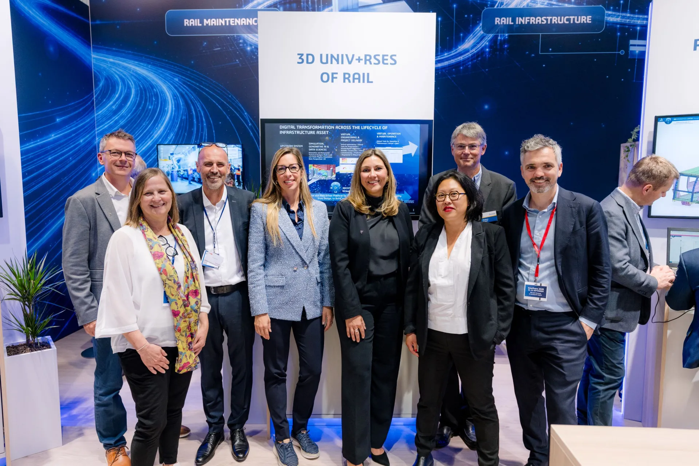
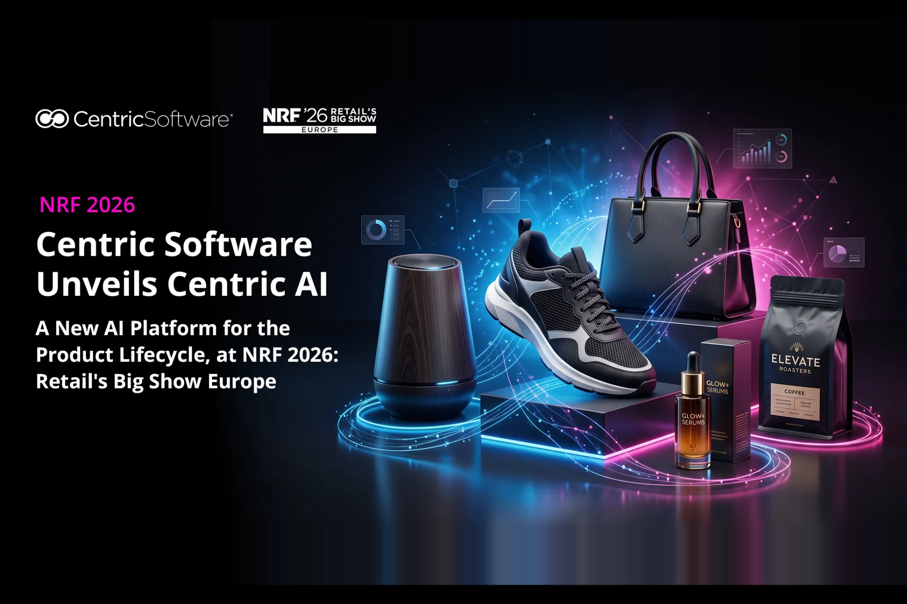
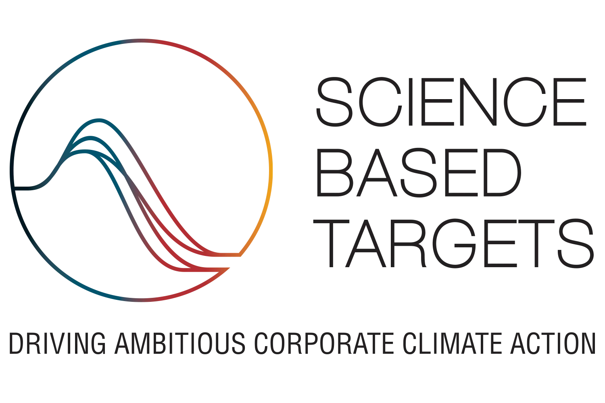
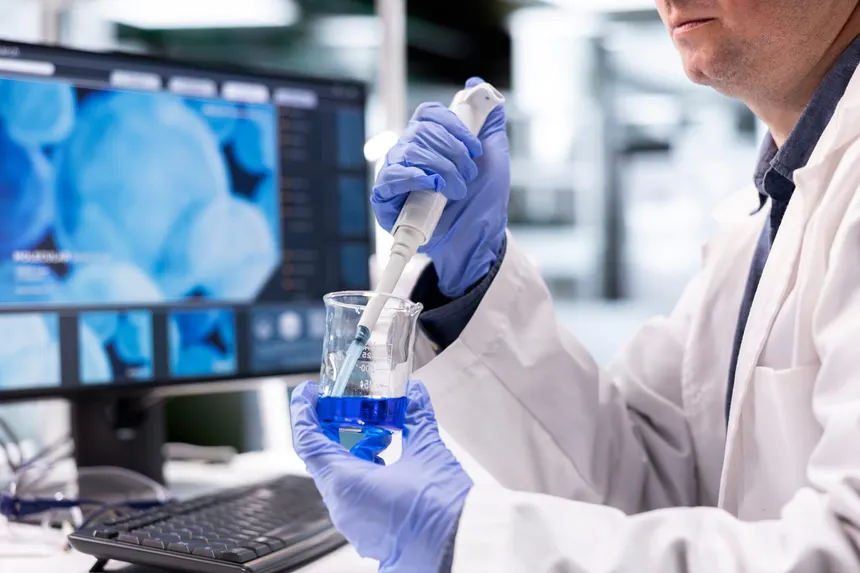
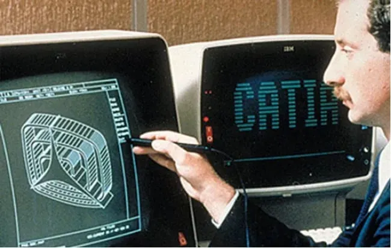
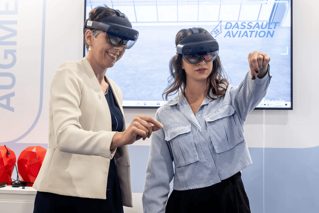
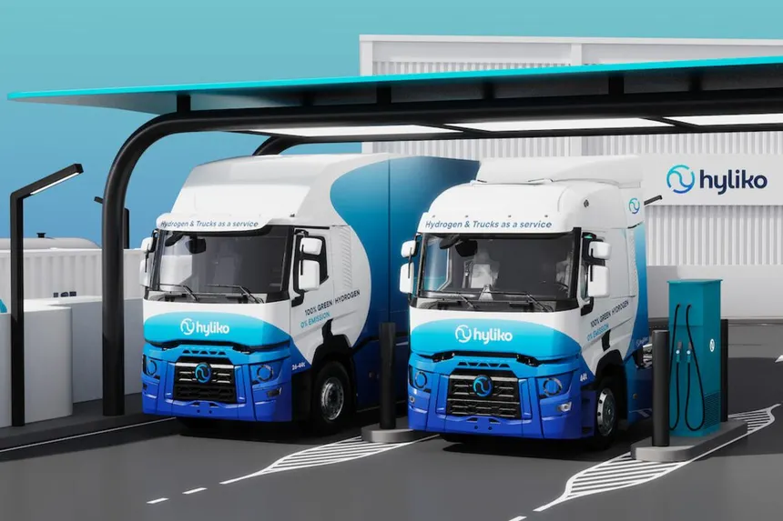
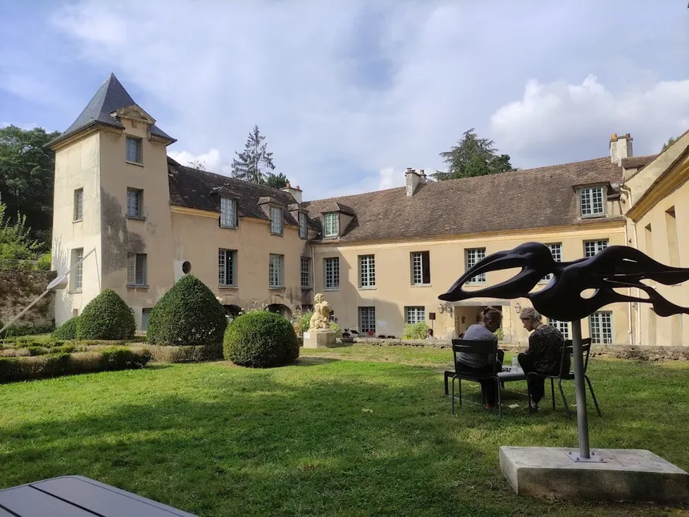
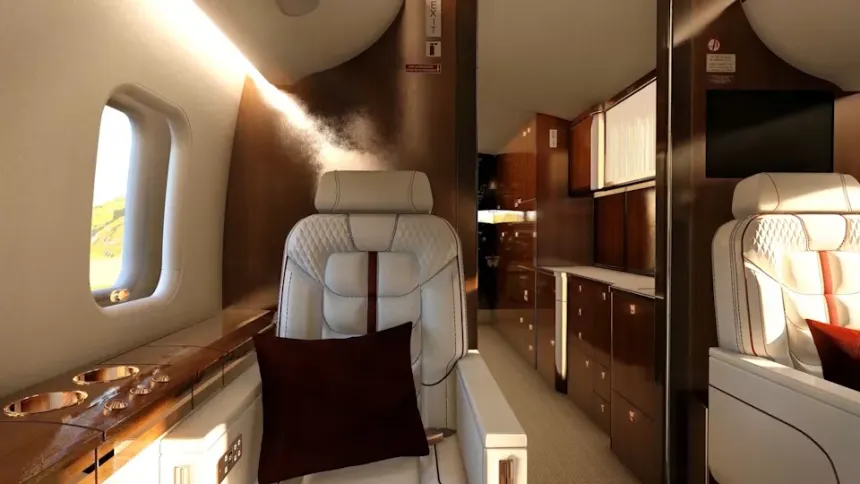
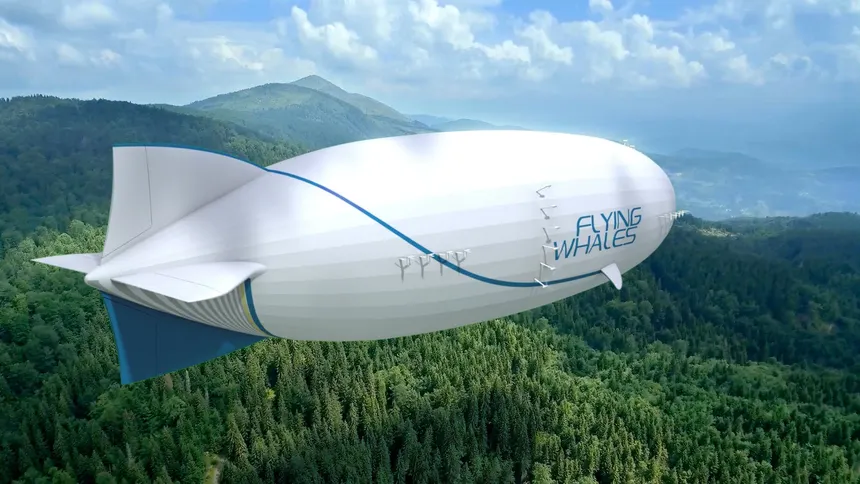

Retrouvez les dernières actualités sur Dassault Systèmes ci-contre. Ce fil d'information est mis à jour régulièrement, donc revenez souvent jeter un oeil sur notre site web !

Dassault Systèmes et SYSTRA s'associent pour concevoir des jumeaux virtuels de nouvelle génération appliqués aux infrastructures de transport. Ce partenariat vise à optimiser la prise de décision, la sécurité et la performance des projets ferroviaires en combinant l'IA scientifique et la modélisation 3D. Grâce à cette approche intégrée, les ingénieurs peuvent simuler et tester des solutions avant leur mise en œuvre réelle.
Paris, France
24 septembre 2026

Centric Software présente sa nouvelle plateforme d'IA conçue pour automatiser et optimiser chaque étape du cycle de vie des produits. En connectant les données et les processus de travail, cette solution réduit considérablement les tâches manuelles et accélère la prise de décision commerciale. Elle permet ainsi aux entreprises d'améliorer leurs marges, leur réactivité et leur croissance globale.
Campbell, Etats-Unis
10 septembre 2026

Dassault Systèmes franchit une nouvelle étape environnementale avec des objectifs de réduction d'émissions de gaz à effet de serre validés par l'initiative SBTi pour 2050. L'entreprise entend décarboner l'ensemble de sa chaîne de valeur et accompagner la transition durable de ses clients grâce aux jumeaux virtuels. Cet engagement fait suite au succès anticipé de ses premiers jalons climatiques initialement prévus pour 2027.
Velizy-Villacoublay, France
July 23, 2026

Dassault Systèmes acquiert désormais ArisGlobal pour deux milliards de dollars dans le but de créer une plateforme d'IA unifiée dédiée aux sciences de la vie. Ce rapprochement combine la modélisation virtuelle et la gestion de données de santé réelles pour accélérer le développement de thérapies sécurisées. La finalisation de cette transaction en cash est prévue pour le second semestre 2026.
Velizy-Villacoublay, France
July 23, 2026
Dassault Systèmes est née en 1981, issue d'une filiale de Dassault Aviation. À ses débuts, l'entreprise a été créée pour développer et commercialiser CATIA, un logiciel informatique conçu par les ingénieurs de Dassault Aviation pour concevoir la voilure du Mirage 50, un avion de chasse. Le logiciel fut une révolution pour son époque puisque les maquettes étaient réalisées physiquement, généralement en bois, ce qui était beaucoup moins pratique et précis que sur ordinateur. Pour s’imposer sur le marché international, l'entreprise s'est ensuite appuyée sur un grand partenariat avec IBM, un géant américain de l'informatique, pour diffuser mondialement son outil de conception 3D.


Aujourd'hui, Dassault Systèmes est un géant mondial du logiciel d'ingénierie, spécialisé dans la modélisation 3D et le suivi du cycle de vie des produits. Grâce à sa plateforme 3DEXPERIENCE, l’entreprise ne se contente plus de concevoir des logiciels, elle donne désormais aux industriels de multiples domaines (aéronautique, automobile, santé, énergie) la capacité de créer des « jumeaux virtuels ». Ces modèles leur permettent de simuler, tester et optimiser des produits ou des processus complexes tels que des organes humains et des usines entières avant même leur fabrication et leur mise en service tout en augmentant nettement les cadences de production pour les clients.
45 ans
Cela fait plusieurs décennies que Dassault Systèmes est présent dans le secteur en tant que pionnier.
Découvrez notre page "Histoire"
Visiter3
Nous couvrons 3 grands secteurs d'activité pour aider au mieux nos clients dans plus de 12 domaines.
Découvrez notre page "Domaines"
Visiter12
Nous avons conçu 12 logiciels pour que dans chaque domaine nos clients puissent s'ajuster.
Découvrez notre page "Produits"
Visiter1.5x
De 2021 à 2025, l'entreprise a eu un résultat net augmentant de plus d'1,5 fois, ce qui la rend pérenne.
Découvrez notre page "Economie"
Visiter-78.3%
Nous avons montré que nous surveillons notre enmpreinte carbone avec -78.3% d'émissions de CO2 de 2021 à 2025.
Découvrez notre page "Ecologie"
Visiter
S'appuie sur les solutions Dassault Systèmes pour développer des camions hydrogène à pile combustible et proposer un service clé en main, intégré et évolutif.

Réinvente ses espaces publics grâce à leur jumeau virtuel et les simulations d’aménagement urbain, de flux de d'air et de chaleur, pour améliorer la qualité de vie de ses résidents.

Transforme la conception de ses équipements de cabine grâce à la mise en place de processus homogènes sur ses multiples sites et la centralisation des données.

Leur dirigeable hybride hélium-électrique prendra forme dans une usine spécialement construite à cet effet. Le tout a été planifié, testé et optimisé dans l'environnement virtuel de 3DEXPERIENCE.